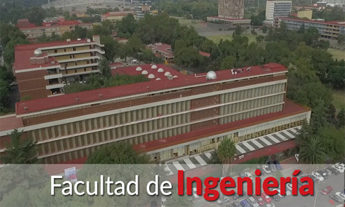

Edificio Y
Edificio Y
Diseñar los elementos que constituyen al cableado estructurado de un edificio, así como el acomodo, configuración de equipos, implementación de medidas de seguridad y precios necesarios para que se lleve a cabo el proyecto de instalación con éxito.
- Integrantes:
- Barcenas Martinez Edgar Daniel
- Barbosa Martínez Erick Gabriel
- García Vázquez José Ángel de Jesús
- Isabel Gómez Yareli
- Roldan Rivera Luis Ricardo
- Grupo:2 FI Redes de Datos Seguras
- Edificio Y Redes de Datos Seguras